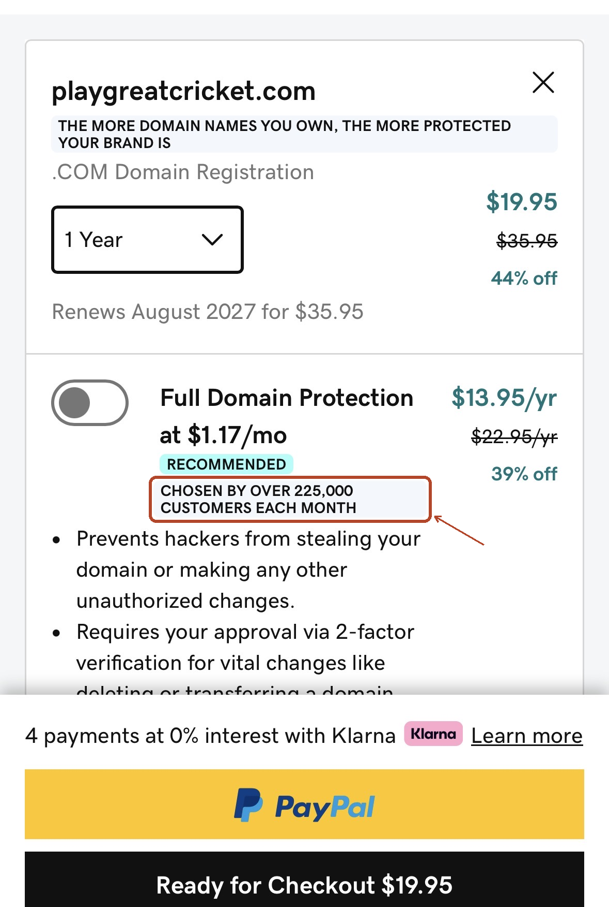
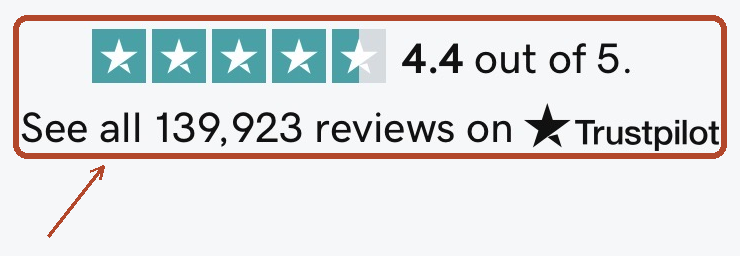

The psychology
Kahneman and Tversky named this anchoring-and-adjustment. People rarely build an estimate from a blank slate. They begin at the anchor, move away from it, then stop once the adjusted figure feels plausible, often well before it is accurate.
Where it causes errors
A struck-through “was” price lifts the reference, so the sale figure looks like a bargain. An aggressive opening offer rewrites what both sides treat as reasonable. Even a number everyone knows is meaningless, like a rigged wheel spin, still pulls the estimate.
Where it can help
A carefully set first offer puts the negotiation on ground that shapes both sides' next moves. Offering a realistic reference figure before someone decides can stop them from overshooting or undershooting for lack of any starting point.
Tversky, A., & Kahneman, D. (1974). "Judgment under Uncertainty: Heuristics and Biases." Science, 185(4157), 1124–1131
The foundational paper: anchoring is one of three heuristics it identifies, alongside representativeness and availability.
StrengthA wheel of fortune, visibly set to stop on either 10 or 65, came first. Only then did people estimate what share of UN members are African countries. Randomness was on full display, so the starting number could not count as useful information.
WeaknessSample sizes were small and unrepresentative, in line with 1970s lab psychology. The task was also a single numeric estimate. Extending the finding to decisions such as pricing had to wait for later replications.
Key findings
Verbatim“the median estimates of the percentage of African countries in the United Nations were 25 and 45 for groups that received 10 and 65, respectively, as starting points. Payoffs for accuracy did not reduce the anchoring effect.”
ParaphrasedThe paper frames anchoring as a general-purpose heuristic underlying everyday probability judgment, not a quirk specific to one task.
See also: Behavioural Economics vs. Behavioural Science vs. Psychology vs. UX, on why this particular finding kept its original name across psychology, economics, and product design, when most don't.
Run this one live: Live Sessions: Anchoring, the same paradigm and the same two anchors (10 and 65), run with a real room instead of a 1974 lab.


Social Proof
Why does a restaurant with a line outside feel safer to pick?
Under uncertainty, people treat what everyone else appears to be doing as a signal of quality. Popularity itself becomes the evidence.
The psychology. Ambiguity pushes people to treat others' visible behaviour as information. The shortcut is often sound: if 500 people chose this, it is probably fine. It fails when the crowd's choice was shaped by something other than quality, such as which option simply got noticed first.
Ambiguity pushes people to treat others' visible behaviour as information. The shortcut is often sound: if 500 people chose this, it is probably fine. It fails when the crowd's choice was shaped by something other than quality, such as which option simply got noticed first.
A product, app, or song can grow more popular because it was displayed as popular early, even when a better alternative sat nearby. Visible popularity then draws still more followers, compounding regardless of the real quality gap.
Real, verified figures (checked reviews, actual completion rates) help people decide faster under genuine uncertainty. The test is whether the number is representative of real behaviour, or built to manufacture a herd.
Two examples from the same real checkout flow, a domain registrar upselling an add-on, then asking for payment on the very next screen. Both lean on the identical mechanism this principle names: let a crowd's size stand in for a quality judgment the buyer hasn't made themselves.

GoDaddy, domain checkout upsell. “CHOSEN BY OVER 225,000 CUSTOMERS EACH MONTH” sits directly under a $13.95/yr add-on marked “RECOMMENDED,” right where a buyer is deciding whether to add it. Captured 2026-08-26.

Same checkout, order summary screen. A 4.4-star Trustpilot rating and “139,923 reviews” count appear directly above the “Complete Purchase” button, the last thing shown before payment. Captured 2026-08-26.
Both numbers are GoDaddy's own claims, not independently verified figures, the same honesty check this site applies to every citation. Showing them here demonstrates the tactic in current, active use, not that it worked on these particular screens. The actual evidence that the mechanism is real is the cited study below.